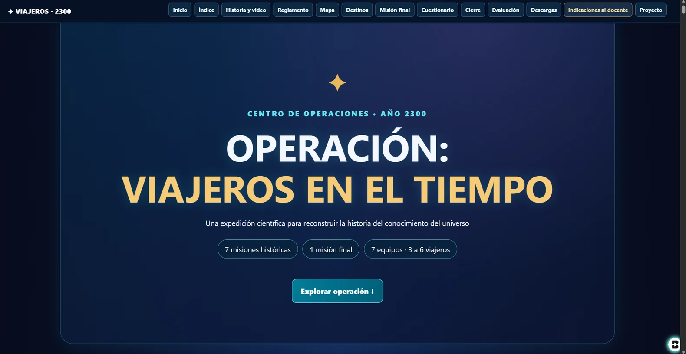

Dos maneras de enseñar el universo
Recursos elaborados para abordar el mismo objetivo de aprendizaje mediante estrategias diferentes.
Para consultar los materiales, selecciona «Actividad 1» o «Actividad 2» en el índice y explora sus documentos, videos y enlaces originales.
OA 13: «Demostrar que comprenden que el conocimiento del Universo cambia y aumenta a partir de nuevas evidencias, usando modelos como el geocéntrico y el heliocéntrico, y teorías como la del Big-Bang, entre otros».
II año medio · Ciencias Naturales, eje Física · Ministerio de Educación de Chile, 2015Conociendo modelos
del universo
Actividad para estudiantes y videotutorial dirigido a docentes.
La propuesta
Se diseñó una actividad breve que funciona como introducción al contenido de la unidad. Los estudiantes responden una pregunta de conocimientos previos, observan un video y luego identifican las características principales de los modelos geocéntrico y heliocéntrico mediante imágenes, una tabla de diferencias y preguntas sobre sus similitudes.
Herramientas utilizadas
Syren de Synthesia para el video educativo, ChatGPT (GPT-6) para crear las imágenes didácticas, ScreenPal para grabar y editar el videotutorial y YouTube para publicarlo.
Guía utilizada por los estudiantes
Documento auténtico de la actividad. Se puede consultar aquí mismo o descargar en PDF.
Si tu navegador no permite visualizar el PDF, utiliza el botón «Descargar guía PDF».
Video educativo · Geocentrismo y heliocentrismo
Recurso audiovisual con avatares de personajes históricos, creado mediante Syren de Synthesia.
Videotutorial: ¿cómo se creó la actividad?
Explicación del proceso de elaboración de los recursos, grabada y editada con ScreenPal. En esta versión del E-portafolio se incorpora el video original en formato MP4 y también se mantiene el enlace para visualizarlo en YouTube.
Operación: Viajeros
en el tiempo
Una experiencia gamificada para reconstruir la historia de la visión del universo.
La experiencia
Se diseñó una actividad gamificada de cinco semanas en la que los estudiantes representan a viajeros del año 2300 encargados de reconstruir la historia de cómo ha cambiado nuestra visión del universo. Deberán recorrer siete destinos históricos y completar una misión final para reconstruir la línea temporal. El docente desempeña el papel de jefe de operaciones y los equipos trabajan principalmente con materiales impresos.
Los destinos históricos están dedicados a Aristóteles, Ptolomeo, Copérnico, Galileo, Kepler, Newton y Hubble. La experiencia utiliza mapas, tarjetas, fichas de misión, insignias y un cuestionario individual mediante Wayground.
Herramientas utilizadas
ChatGPT (GPT-6) como apoyo en la elaboración de materiales y la web; Syren de Synthesia para el video introductorio; Wayground para la evaluación individual y GitHub Pages para publicar la página.
Web de la experiencia gamificada
La página original reúne las indicaciones, misiones, recursos imprimibles y materiales para su implementación.

Ir al sitio originalEl sitio contiene los recursos elaborados y, de acuerdo con el autor, incorpora correcciones realizadas tras la revisión del profesor.
Video de inicio de operación
Introducción audiovisual creada con Syren de Synthesia para ambientar la narrativa en el año 2300.
Este E-portafolio muestra una síntesis de la Actividad 2. Los documentos y materiales detallados se consultan en la web original, evitando duplicar todos sus recursos aquí.